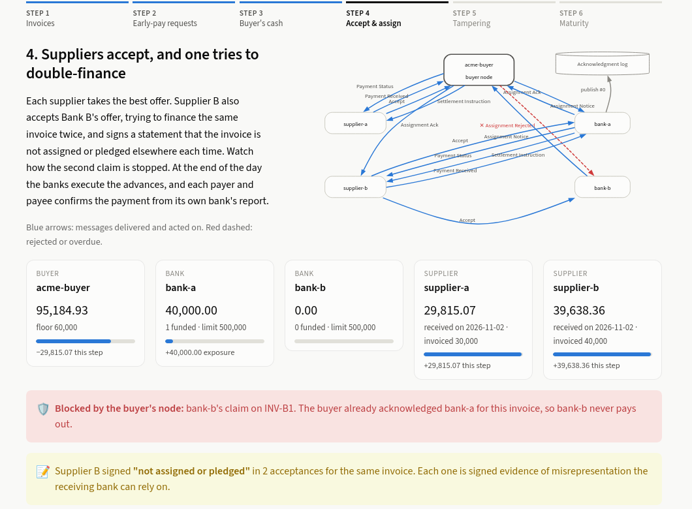
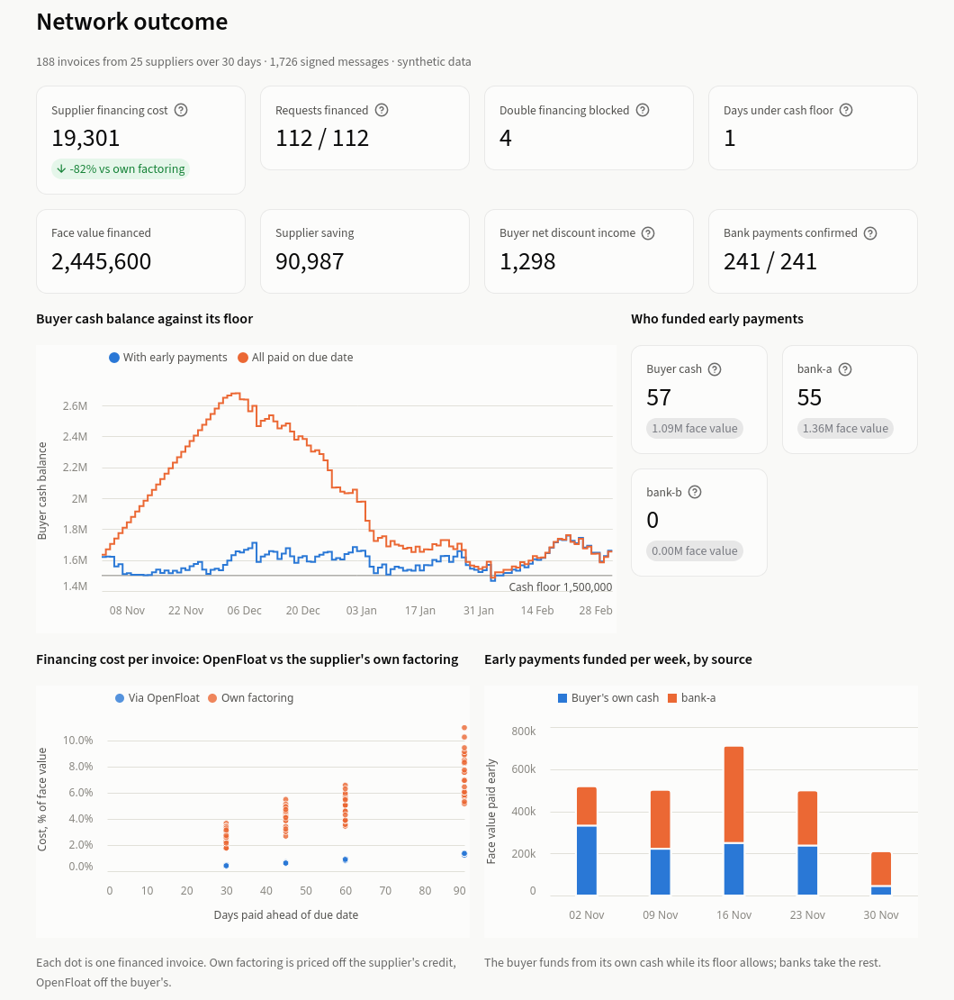
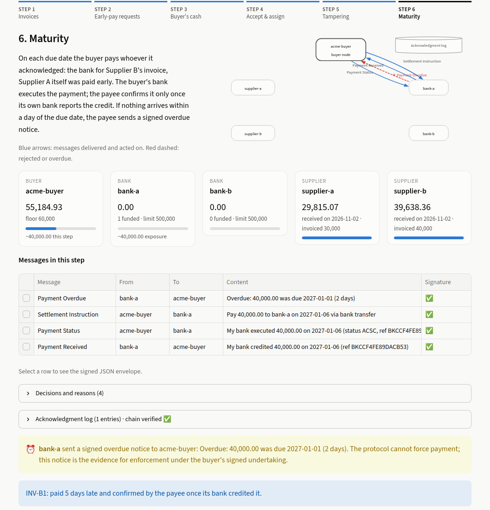

Open-source protocol and reference implementation
Get paid early at your buyer’s cost of money.
A supplier holding an invoice its buyer has approved can be paid today by the cheapest source of liquidity: the buyer’s own cash, or a bank pricing off the buyer’s credit. OpenFloat is the open, operator-less protocol for it, and every rule is code you can read, run and test.
- Apache-2.0
- Spec CC BY 4.0
- 21 tests passing
- ~2.1k lines of Python, excluding the dashboard UI
- Draft
openfloat/0.1
$ git clone https://github.com/4rnaudD/openfloat
$ cd openfloat && uv sync
$ uv run openfloat simulate
openfloat/0.1 | synthetic scenario seed=7 | 1726 signed messages
Invoices issued 188
Early payment requested / financed 112 / 112
Routes BUYER_DISCOUNT: 57, FUNDER: 55
Face value financed 2,445,600
Supplier cost via OpenFloat 19,301
Supplier cost via own factoring 110,288
Supplier saving 90,987
Buyer discount income, net of cash yield 1,298
Double-financing attempts blocked 4
Messages rejected (bad signature) 0
Buyer min balance / floor 1,465,412 / 1,500,000
Days below floor caused by early payment 1
$ uv run openfloat dashboard # walkthrough in the browseropenfloat simulate, seed 7, on synthetic data: 1,726 signed messages between one buyer, 25 suppliers and two banks.The problem
The rules of supplier finance run in code nobody can read.
Every early-payment programme depends on the same three rules. Has the buyer confirmed it will pay? Has this invoice already been financed? Who gets paid at maturity? Today those rules run inside closed platforms, each operated by one company, each a silo.
What suppliers typically pay for factoring, priced off their own credit. They cannot see why, when their buyer’s confirmation would price the same invoice at around benchmark + 60–100 bps3.
Factoring: trade press and vendor sources. Buyer-quality pricing: indicative, single secondary source.Funders cannot check what was financed elsewhere, so when the record is private, double financing surfaces too late. It is under investigation in the 2025 First Brands bankruptcy (allegations only)6,7. In the 2021 Greensill collapse, about $10bn of supply-chain-finance funds were frozen when the platform’s insurance cover lapsed.
Greensill: reputable press. First Brands: allegations under investigation.OpenFloat makes those rules open code: a spec anyone can implement and a reference implementation anyone can read, run and test.
Read the code
Ten modules and one test file. Small enough to read end to end.
Python 3.12, Pydantic models and Ed25519 signatures. Start with messages.py, then nodes.py; every decision a node takes is logged with its reason.
| File | What it does | Lines |
|---|---|---|
| crypto.py | Node identities, canonical JSON, Ed25519 signing and verification | 83 |
| messages.py | Every protocol message, and the signed Envelope that verifies embedded proofs recursively | 239 |
| nodes.py | Buyer, supplier and funder nodes: each keeps its own state and records each decision with a reason | 621 |
| acklog.py | Append-only, hash-chained acknowledgment log, in the style of Certificate Transparency | 89 |
| optimiser.py | The buyer’s choice of which invoices to pay early from its own cash, without breaching its cash floor | 143 |
| rails.py | Mock bank rails: execute transfers, report status (pain.002) and credits (camt.054) | 57 |
| iso20022.py | Renders settlement instructions as ISO 20022 pain.001.001.09 payment files | 84 |
| network.py | In-process transport that verifies every signature before a node sees a message | 133 |
| sim.py | Synthetic scenario generator and evaluation | 244 |
| __init__.py | The openfloat command line | 62 |
| Protocol code | 1,755 | |
| tests/test_protocol.py | 21 tests: attacks, payment evidence and property-based invariants | 342 |
| dashboard*.py | Local Streamlit walkthrough UI (three files), not part of the protocol | 1,002 |
Run it
Python 3.12+ and uv. Everything runs locally; no real money moves.
git clone https://github.com/4rnaudD/openfloat
cd openfloat && uv sync
# step-by-step walkthrough in the browser
uv run openfloat dashboard
# synthetic network: 1 buyer, 25 suppliers, 2 banks
uv run openfloat simulate
# 21 protocol and invariant tests
uv run pytestFiles under src/openfloat/. Line counts at commit 49ca154; code excerpts on this page link to the exact lines at that commit.
How it works
Every message is signed. Every claim carries its proof.
Each participant runs its own node. Nodes exchange Ed25519-signed messages directly and resolve each other’s keys through a participant directory. The buyer’s approval is a signed PAYMENT_UNDERTAKING; a message that relies on it carries it as an embedded proof, so any node can check it without trusting anyone in between.
That signed promise is what lets a funder price off the buyer’s credit rather than the supplier’s. The supplier then takes the cheapest firm offer: the buyer’s own cash at a discount, or a funder’s advance.
msg_id: str = Field(default_factory=lambda: uuid.uuid4().hex[:16])
sender: str
recipients: list[str]
sent_on: date
body: Body
signature: str = ""
def signing_payload(self) -> dict:
return self.model_dump(mode="json", exclude={"signature"})
@classmethod
def seal(cls, identity: Identity, recipients: list[str], sent_on: date, body: BaseModel) -> "Envelope":
env = cls(sender=identity.node_id, recipients=recipients, sent_on=sent_on, body=body)
env.signature = identity.sign(env.signing_payload())
return env
def verify(self, directory: Directory) -> bool:
"""Check this envelope's signature and, recursively, any embedded envelopes."""
key = directory.public_key(self.sender)
if key is None or not verify(key, self.signing_payload(), self.signature):
return False
for proof in _embedded(self.body):
if not proof.verify(directory):
return False
return True
def _embedded(body: BaseModel) -> list[Envelope]:
match body:
case EarlyPayRequest():
return [body.undertaking]verify then recurses into any signed envelope the body embeds.{
"protocol": "openfloat/0.1",
"msg_id": "8241272f61f040ba",
"sender": "acme-buyer",
"recipients": [
"bank-a",
"supplier-b"
],
"sent_on": "2026-11-02",
"body": {
"type": "ASSIGNMENT_ACK",
"invoice_id": "INV-B1",
"invoice_hash": "61028089e9f3ce8a67990b48d8b3a32aa378523bbc64d970c1b595f9c735728d",
"new_payee_id": "bank-a",
"amount": 4000000,
"due_date": "2027-01-01"
},
"signature": "si4pfB7Rbw6k0pH5OYXP2YiVMKTNcdC+yUYjKzut41YF4dejwz4qmNO7DBtdSuJVHurk3exIMSvYI9+ME2IWBQ=="
}Reading an ASSIGNMENT_ACK
senderis the buyer. Any node verifiessignaturewith the buyer’s public key from the directory.- The signature covers everything else: protocol version, message id, recipients, date and the whole body, encoded as canonical JSON. Change one character and verification fails.
invoice_hashis the SHA-256 of the invoice’s content. It binds the acknowledgment to one exact invoice, so an altered or re-issued invoice cannot reuse it.new_payee_idis the funder the buyer will pay at maturity:amountin minor units (40,000.00) ondue_date.- Sent to the funder and the supplier, so both hold the buyer’s signed word.
The full message sequence
Double financing
Why no one can finance an invoice twice.
Three checks, each against a different party who might try. Here is each one in the code.
The buyer acknowledges at most once
The buyer owes the money, so its node decides who gets paid at maturity, the same logic as a notice of assignment in receivables law. The first valid assignment moves the invoice to ASSIGNED; every later one is rejected. Funders fund only after a matching acknowledgment.
def _on_assignment(self, env: Envelope, note: AssignmentNotice) -> None:
p = self.payables.get(note.invoice_id)
def reject(reason: str) -> None:
self.decide(note.invoice_id, f"assignment to {note.new_payee_id} REJECTED: {reason}")
self.send([note.new_payee_id], AssignmentRejected(invoice_id=note.invoice_id, new_payee_id=note.new_payee_id, reason=reason))
if p is None:
return reject("unknown invoice")
acc_env = note.acceptance
acc = acc_env.body
if not isinstance(acc, Accept) or acc_env.sender != p.invoice.supplier_id:
return reject("acceptance not signed by the invoice's supplier")
offer_env = acc.offer
if offer_env.sender != note.new_payee_id or env.sender != note.new_payee_id:
return reject("offer not issued by the notifying funder")
if offer_env.body.invoice_hash != p.invoice_hash or note.invoice_hash != p.invoice_hash:
return reject("invoice hash mismatch")
# …
if p.status == InvStatus.ASSIGNED:
return reject(f"DOUBLE FINANCING: already assigned to {p.payee}")
if p.status == InvStatus.PAID_EARLY:
return reject("DOUBLE FINANCING: invoice already paid early by buyer")
if p.status != InvStatus.APPROVED:
return reject(f"invoice is {p.status}")
# …
self.decide(note.invoice_id, f"assignment acknowledged: will pay {note.new_payee_id} {p.invoice.amount/100:,.2f} on {p.invoice.due_date}")
self.send(
[note.new_payee_id, p.invoice.supplier_id],
AssignmentAck(invoice_id=note.invoice_id, invoice_hash=p.invoice_hash, new_payee_id=note.new_payee_id, amount=p.invoice.amount, due_date=p.invoice.due_date),
)AssignmentAck to the funder and the supplier. Elided lines (# …) are a switch used only by the adversarial test of a dishonest buyer.The supplier signs a representation
Every ACCEPT carries the supplier’s signed statement that the invoice is not assigned or pledged. The protocol cannot see a factor or lender outside it; this does not prevent that, but it turns each acceptance into signed evidence that gives the funder recourse.
# Supplier's signed representation in every ACCEPT (legal text in SPEC.md): the receivable has not
# been assigned, sold, pledged or otherwise encumbered in favour of anyone but the offeror.
NOT_ASSIGNED_OR_PLEDGED = "NOT_ASSIGNED_OR_PLEDGED"
class Accept(BaseModel):
type: Literal["ACCEPT"] = "ACCEPT"
offer: "Envelope" # the signed offer being accepted
supplier_id: str
representation: Literal["NOT_ASSIGNED_OR_PLEDGED"]Accept body: an acceptance without it does not validate, and altering it after signing breaks the signature.Acknowledgments are published, then checked
A dishonest buyer could acknowledge the same invoice to two funders, each seeing only its own. Funders publish every acknowledgment they rely on to an append-only, hash-chained log, then check it.
if ack.invoice_id not in self.pending or ack.new_payee_id != self.id:
return
o, u = self.pending.pop(ack.invoice_id)
if env.sender != u.buyer_id or ack.invoice_hash != u.invoice_hash or ack.amount != u.amount:
self.exposure[u.buyer_id] -= u.amount
return self.decide(o.invoice_id, "ack does not match undertaking; not funding")
entry = self.net.ack_log.publish(self.identity, env, self.net.today)
earlier = self.net.ack_log.conflicts(entry)
if earlier:
self.exposure[u.buyer_id] -= u.amount
self.alarms.append(o.invoice_id)
return self.decide(o.invoice_id, f"EQUIVOCATION: buyer already acknowledged {earlier[0].funder_id} "
f"(log entry #{earlier[0].seq}); not funding")
self.decide(o.invoice_id, f"published ack to log (entry #{entry.seq}); no earlier acknowledgment")
self.book.append((o, u))
self.expect(o.invoice_id, u.buyer_id, u.amount, u.due_date, "maturity")
self.decide(o.invoice_id, f"buyer acknowledged; funding {o.advance/100:,.2f}")
self.send(SettlementInstruction if the acknowledgment matches the undertaking it priced and the log holds no earlier acknowledgment of the same invoice to another funder. def conflicts(self, entry: AckLogEntry) -> list[AckLogEntry]:
"""Earlier entries for the same invoice from a different funder: buyer equivocation."""
return [e for e in self.for_invoice(entry.invoice_hash) if e.seq < entry.seq and e.funder_id != entry.funder_id]
What the log holds. Each entry has a sequence number, the invoice hash, the buyer and funder ids, a digest of the signed acknowledgment, the previous entry’s hash, and the funder’s signature. No amounts or prices. Anyone can recompute the chain; altering, inserting, removing or reordering an entry is detected.
Limitation. A log operator cannot forge or rewrite entries, but could withhold them. The production answer, as in Certificate Transparency, is several independent logs, mirrors and signed tree heads exchanged by gossip. The reference implementation runs a single in-process log.
Settlement
Money moves on rails you already have.
Nodes never move money. The payee named in the buyer’s acknowledgment is who gets paid; nodes emit settlement instructions to the banks participants already use, then exchange signed confirmations of what those banks report.
PAYMENT_STATUS from its bank’s pain.002 reportPAYMENT_RECEIVED from its bank’s camt.054 credit<?xml version="1.0" encoding="UTF-8"?>
<Document xmlns="urn:iso:std:iso:20022:tech:xsd:pain.001.001.09">
<CstmrCdtTrfInitn>
<GrpHdr>
<MsgId>OF2646ADBB4250D4619D4D</MsgId>
<CreDtTm>2026-01-01T00:00:00</CreDtTm>
<NbOfTxs>2</NbOfTxs>
<CtrlSum>26448.16</CtrlSum>
<!-- … -->
</GrpHdr>
<PmtInf>
<!-- … -->
<ReqdExctnDt>
<Dt>2026-11-02</Dt>
</ReqdExctnDt>
<!-- … -->
<CdtTrfTxInf>
<PmtId>
<EndToEndId>bdea7b80600f430d</EndToEndId>
</PmtId>
<!-- … --><!-- … -->.One reference end to end
The instruction’s message id travels as the pain.001 EndToEndId through the bank status report and the credit notification, so every bank movement maps to exactly one protocol instruction.
Missing payments are evidenced
Every payee tracks what it expects. If no matching credit arrives by the due date plus a grace period, its node sends a signed PAYMENT_OVERDUE. With the buyer’s undertaking or acknowledgment, that supports enforcement under the applicable law.
Where things stand
- The files are well-formed pain.001.001.09 but not yet validated against the official XSD.
- Mock bank rails stand in for participants’ banks in the simulation. No real money moves.
The protocol coordinates and evidences obligations. Banks move money. The law enforces obligations.
Deliberately out of scope
- Mechanisms that compel payment, such as direct-debit mandates, a bank acting as paying agent, or programmable money and atomic settlement. They depend on jurisdiction and licensing, so they are left to bilateral arrangements between participants and their banks.
- Card issuers as funders. A card issuer lends to the buyer, and a card payment extinguishes the invoice rather than assigning it. A future version may model card as a buyer-side payment option.
Tests as evidence
21 tests. Most of them are attacks.
Each claim on this page has a test that tries to break it: tampering, forgery, replay, double financing, a dishonest buyer, a rewritten log, missing payments. Every test name below links to its code.
$ uv run pytest -q
..................... [100%]
21 passed in 3.73s49ca154. Two of the tests are property-based (Hypothesis) and run many random cases each.Signatures
- Tampered message: amount changed in transit, rejected by the network
- Forged undertaking: supplier signs its own “buyer approval”, funder declines
- Unknown signer: key not in the directory, rejected
Double financing
- Double-dipping supplier is funded exactly once
- Replayed assignment notice is rejected
- Funder reusing another funder’s acceptance cannot claim the invoice
- Expired offer cannot be accepted
- Representation is required and cannot be altered after signing
- Equivocating buyer acknowledges twice; the log stops the second funder
- Log tampering: rewritten, reordered or dropped entries are detected
- Invoice already in the log is declined by a new funder
Money movement
- Every bank payment is confirmed by payer and payee, same
EndToEndId - Late buyer gets a signed overdue notice, then pays late
- Payment claimed but never made goes overdue
- Credit with the wrong amount is not treated as payment
- pain.001 contents match the instructions: count, control sum, ids
Policy and invariants
- Invoice rules and funder credit limits are enforced
- Random networks (property-based): every invoice paid to its supplier once and by the buyer once, all exposure released, never costlier than factoring
- Optimiser (property-based) never breaches the cash floor and matches or beats a greedy baseline; it skips discounts below the cash yield
Results on synthetic data
What the simulation shows.
Synthetic scenario: about 185 invoices over 30 days, 60% of suppliers wanting early payment, supplier factoring rates drawn from 20–45% APR, banks at 5.5% and 6.2%, 5% of suppliers attempting to double-finance. Seeds 7, 11 and 23.
| Metric | Result |
|---|---|
| Early-payment requests financed | 102–112 per seed, 100% of requests |
| Route mix | 51–56% buyer cash, the rest banks |
| Supplier financing cost vs. own factoring | ~$19.3k vs ~$110k on ~$2.45M financed (seed 7), 82–85% lower across seeds |
| Double-financing attempts | 0–17 per seed (depends on which suppliers draw as double-dippers), all blocked |
| Days the buyer fell below its cash floor because of early payments | 0–1 with forecast, 10–41 without |
All figures come from synthetic data with the stated assumptions. They are not a claim about any real programme. Reproduce seed 7 with uv run openfloat simulate.
Where it fails
The buyer’s payables forecast is a simple run-rate. When actual invoices exceed it, early payments can still push the balance under the floor for a few days. A better forecast, or a safety margin on the floor, would fix that.
Try the numbers on one invoice
Same simple-interest formula as the code: amount × APR × days / 365.
def discounted(amount: int, apr: float, days: int) -> int:
"""Advance after a simple-interest discount at `apr` for `days`."""
return amount - round(amount * apr * max(days, 0) / 365)Protocol, not platform
No central operator to trust, fund or outlive.
For each component, the design asks one question: is there a party everyone would trust to run this? For approved payables, there is: the obligor. Only the buyer can say who it will pay at maturity, so the buyer’s node is the registry. No shared ledger of invoices is needed.
Consortium networks shut down
we.trade closed in 2022, Marco Polo became insolvent in 2023, and Contour closed in 2023. Each shut when its bank owners stopped funding it9. A protocol with no operator has no single owner whose withdrawal ends it.
Open networks already work
Peppol e-invoicing connects independent access points through a shared specification and directory. Singapore’s InvoiceNow, built on Peppol, is being extended to all GST-registered businesses, phased from 2028 to 203110. OpenFloat aims to map invoices to Peppol BIS Billing 3.0.
Governance: the intent
The intended home for the specification and participant directory is a neutral foundation (FINOS-style) with change control and conformance testing, and no single commercial owner. GLEIF vLEI is the leading candidate for binding node keys to legal entities. Both are open questions, not settled.
For each participant
What each party gets.
Buyers
- Earn a discount by paying early from surplus cash, decided by a policy that respects your daily cash floor and payables forecast.
- Stronger suppliers, without running or paying for a platform.
- Stay the source of truth: you acknowledge at most one payee per invoice and pay that payee at maturity.
Suppliers
- Get paid on an approved invoice at a price based on your buyer’s credit, not your own.
- Competing firm offers from the buyer and any participating funder; take the cheapest.
- Signed confirmations of every payment, and overdue notices if one is late.
Banks and funders
- Buyer-quality assets, backed by the buyer’s signed undertaking and acknowledgment.
- Built-in double-financing protection: fund only after the acknowledgment and a clean log check, with the supplier’s signed representation as recourse.
- Settlement through your existing payment systems, as standard pain.001 files.
See it run
The dashboard, on your machine.
uv run openfloat dashboard walks through one buyer, two banks and two suppliers exchanging real signed messages, step by step. One supplier tries to finance the same invoice twice and a message is tampered with in transit; both are rejected.



Roadmap and open questions
A draft, published to be challenged.
Next
- HTTPS transport and directory lookup, so nodes run independently
- Plain-language offer explanations for suppliers (LLM-assisted, never deciding)
- Dilution (credit notes, disputes), partial financing, term-extension guardrails
- Mapping invoices to Peppol BIS Billing 3.0 / InvoiceNow
- Card payments as a buyer-side payment option (pay by card now, settle on the card statement), not a funder
- Not yet in 0.1: key rotation and revocation; several independent acknowledgment logs with signed tree heads and gossip
Open questions in the spec
- Governance. Who owns the specification and the participant directory? Intended: a neutral foundation with change control and conformance testing.
- Identity. Binding node keys to verified legal entities; GLEIF vLEI is the leading candidate.
- Sustainability. Maintenance funded by hosted nodes, compliance tooling and certification, without a fee on every transaction.
- Dilution. A defined rule for how credit notes and disputes affect assigned invoices.
Read it, run it, or tell us where it breaks.
Clone the code, build a node against the specification, or open an issue with a question, a flaw, or a use case it does not cover.
- Corpay, invoice factoring (~2.5% per 30 days, about 30% APR). corpay.com
- NerdWallet, invoice financing (4% per 4 weeks, about 57% APR). nerdwallet.com
- CTP study guide, supply chain finance (illustrative SOFR + 0.85% vs supplier’s own SOFR + 5.50%). open-exam-prep.com
- FCI global factoring figures via BCR, May 2026. bcrpub.com
- BCR World Supply Chain Finance Report 2026. bcrpub.com
- GTR, First Brands faces investigation into double financing of receivables and inventory. gtreview.com
- SFNet, The First Brands collapse: a cautionary tale. sfnet.com
- CNBC, Credit Suisse flags possible charge from Greensill fallout, March 2021. cnbc.com
- GTR, Contour to shut down as bank shareholders pull funding. gtreview.com
- IRAS, Committee of Supply 2026: extension of GST InvoiceNow requirement. iras.gov.sg